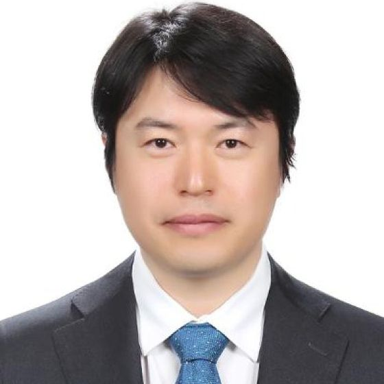

학과장교수
김우철Woochul Kim
에너지·열유체
어드밴스드 열공학 · 공학관 A310
About
1962년 기계공학과 독립 이래 반세기가 넘는 시간 동안, 연세대학교 기계공학부는 교육과 연구의 중심에서 정밀과 신뢰의 가치를 지켜 왔습니다. 오늘은 33명의 교수진과 33개 연구실이 여섯 개 분야에서 함께 연구하고 가르칩니다.
인사말

“정밀과 신뢰의 가치를 지키며,
멈추지 않는 도전을 이어 갑니다.”
연세대학교 기계공학부 홈페이지를 찾아 주셔서 진심으로 감사드립니다.
우리 학부는 1962년 기계공학과로 독립한 이래 반세기가 넘는 시간 동안 기계공학 교육과 연구의 중심에서 정밀과 신뢰의 가치를 지켜 왔습니다. 33명의 교수진과 33개 연구실이 고체·열·유체에서 나노·로보틱스·인공지능까지 폭넓은 스펙트럼을 아우르며, 이론적 깊이와 실험적 검증을 함께 추구합니다.
‘멈추지 않는 50년, 100년을 향한 도전’이라는 모토처럼, 우리는 어제의 성취에 머무르지 않고 내일의 문제를 향해 나아갑니다. 학생 한 사람 한 사람이 기계공학의 원리를 손끝으로 익히고, 세상의 난제를 스스로 설계·해결하는 공학자로 성장하도록 최선을 다하겠습니다. 여러분의 따뜻한 관심과 성원을 부탁드립니다.
비전
기독교 정신을 바탕으로 창의적 설계 역량과 글로벌 리더십을 갖춘 공학 인재를 양성합니다.
멈추지 않는 50년,
100년을 향한 도전.
— 연세대학교 기계공학부 연구 모토
교육목표
교육과정 상세는 교육 페이지를 참조하세요.
보직 교수
연락처
행정 문의는 전화 또는 대표 이메일로, 방문은 아래 주소로 안내합니다.
연락처
오시는 길
입학 안내
학부 입학부터 대학원 진학까지 — 지원 절차와 장학·진로 정보를 한곳에 정리했습니다.